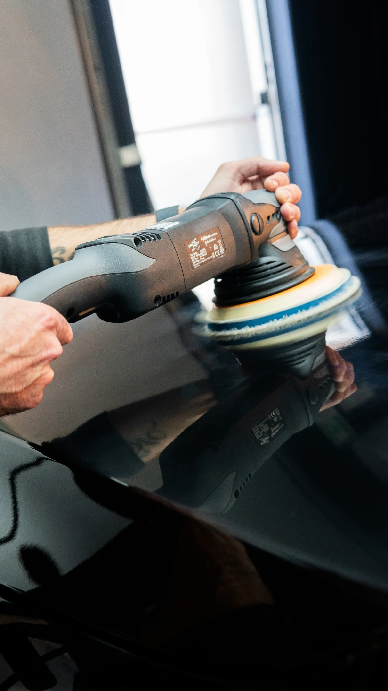
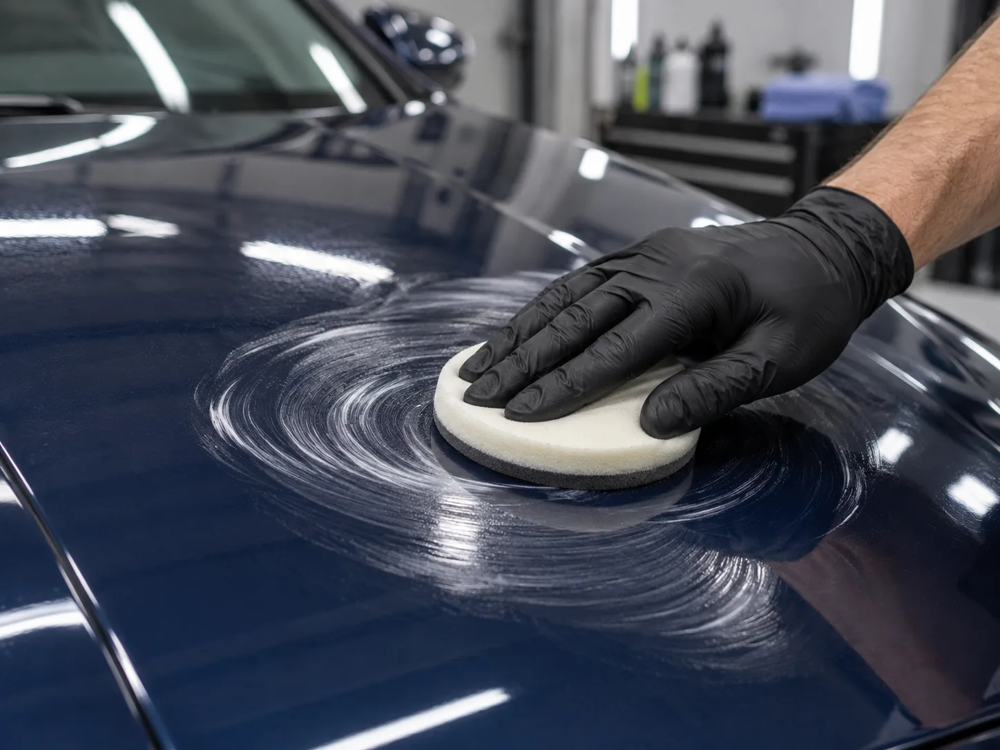
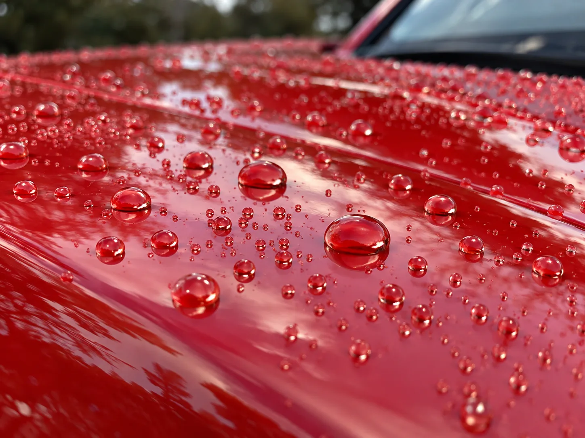
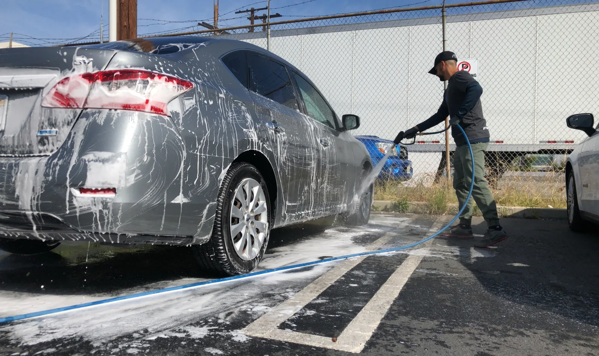

▲ 코팅 전 광택(폴리싱) 작업은 왁스든 세라믹코팅이든 결과물의 완성도를 좌우한다 ⓒ Harrycapta / Wikimedia Commons (CC BY-SA 4.0)
세차장에 가면 늘 같은 질문을 받는다. "왁스 하실래요, 유리막 하실래요, 아니면 세라믹으로 가실래요?" 가격 차이는 열 배 가까이 나는데, 직원 설명만 들으면 셋 다 "광택 좋아지고 오래 간다"는 말로 들린다.
하지만 왁스와 유리막코팅, 세라믹코팅은 화학적으로 완전히 다른 물질이고, 지속기간과 관리법도 크게 다르다. 특히 "영구 코팅"이라는 표현은 어떤 시공에도 존재하지 않는다는 점부터 짚고 넘어가야 한다.
1. 원리부터 다르다 — 왁스는 '얹기', 코팅은 '결합'
왁스는 카나우바 야자수 잎에서 추출한 천연 왁스나 합성 폴리머를 도장면 위에 얇게 바르는 방식이다. 화학결합 없이 물리적으로 표면을 덮어 광택과 발수력을 만들어내지만, 세차 몇 번이면 씻겨 나간다.
유리막코팅과 세라믹코팅은 원리가 다르다. 둘 다 실리콘·규소 계열 성분을 도장면에 화학적으로 결합(경화)시켜 얇고 단단한 유리질 막을 만든다. 다만 세라믹코팅은 SiO2(이산화규소) 농도가 높고 나노 폴리머 구조가 더 촘촘해, 유리막코팅보다 막 두께와 경도(9H 등급 표기)가 높은 경우가 많다.
| 구분 | 주성분 | 도장면 결합 방식 |
|---|---|---|
| 왁스 | 카나우바 왁스, 합성 폴리머(실런트) | 화학결합 없이 표면에 물리적으로 얹힘 |
| 유리막코팅 | 실리카(규산) 기반 액상 코팅제 | 도장면과 화학결합해 유리질 막 형성 |
| 세라믹코팅 | SiO2(이산화규소) 나노 폴리머 | 더 두껍고 치밀하게 경화, 높은 표면 경도 |

▲ 왁스는 화학결합 없이 도장면 위에 얇은 막을 얹는 방식이라 시공이 쉽지만 지속기간이 짧다 ⓒ CarPrism (AI 생성 이미지)
2. 가격과 지속기간 — 왜 열 배씩 차이 나나
가격 차이는 원료 원가보다 '얼마나 오래가는가'에서 갈린다. 왁스는 셀프 시공이 가능할 정도로 저렴하지만 금방 씻겨 나가고, 세라믹코팅은 비싼 대신 몇 년을 버틴다.
| 구분 | 평균 시공 비용 | 지속기간 | DIY 가능 여부 |
|---|---|---|---|
| 왁스 | 제품 6천~5만 원대 / 셀프 시공 | 2주~2개월 | 매우 쉬움 — 초보자도 가능 |
| 유리막코팅 | 30만~70만 원대(차급별), 셀프킷 1만~15만 원 | 6개월~1년 | 전문 시공 권장, 셀프킷도 존재 |
| 세라믹코팅 | 40만~100만 원대, 프리미엄 라인 200만 원대까지 | 2~5년 | 전문 업체 시공이 사실상 필수 |
📍 지속기간은 '관리'에 따라 크게 갈린다
표에 나온 지속기간은 어디까지나 평균치다. 지하주차장 위주로 관리하고 pH 중성 샴푸로 세차하면 상한선에 가깝게 가지만, 야외 주차·강한 자외선·산성비 노출이 잦으면 세라믹코팅도 1~2년 만에 광택이 눈에 띄게 죽는다. 세부 가격 구조는 아래 코팅 가이드에서 직접 확인할 수 있다. 코팅 완벽 가이드 바로가기
3. 광택·발수력·스크래치 저항성 — 항목별로 승자가 다르다
"어떤 게 제일 좋아요?"라는 질문에는 정답이 없다. 항목별로 강점이 다르기 때문이다. 카나우바 왁스는 따뜻하고 깊은 '젖은 느낌'의 광택을 내는 반면, 세라믹코팅은 유리처럼 날카롭고 선명한 반사광을 만든다.
✅ 항목별 강점 비교
· 광택감 — 왁스는 따뜻한 '웻룩' 광택, 세라믹코팅은 유리알처럼 선명한 반사광
· 발수력(방수 성능) — 세라믹코팅 > 유리막코팅 > 왁스 순, 물방울이 얼마나 동그랗게 맺히는지로 눈으로도 확인 가능
· 스크래치·산화 저항성 — 세라믹코팅이 가장 단단하지만 세차 스크래치(swirl mark)까지 막아주진 못함
· 시공 난이도 — 왁스는 누구나 가능, 유리막·세라믹코팅은 도장면 상태에 따라 사전 폴리싱(광택 작업)이 결과를 좌우
· 내열성 — 세라믹코팅이 왁스 대비 훨씬 강해 엔진룸 근처나 여름철 뙤약볕에도 상대적으로 안정적

▲ 물방울이 퍼지지 않고 동그랗게 맺히는 정도로 코팅의 발수력을 눈으로 가늠할 수 있다 ⓒ CarPrism (AI 생성 이미지)
4. "영구 코팅"이라는 광고, 믿으면 안 되는 이유
세차장 간판이나 전단지에 흔히 등장하는 '반영구 코팅', '평생 코팅'이라는 문구는 과장 광고에 가깝다. 어떤 코팅이든 자외선, 세차 마찰, 산성비, 도로 오염물질에 의해 서서히 마모되며, 완전히 마모되지 않는 코팅제는 존재하지 않는다.
📍 '무료 코팅' 권유는 더 조심해야 한다
사고로 차량을 수리할 때 정비업체나 렌터카 업체가 "공짜로 유리막코팅 해드릴게요"라며 접근하는 경우가 있는데, 이는 과잉 수리비를 가해자 보험사에 청구하는 보험사기 수법으로 악용된 사례가 다수 적발된 바 있다. 실제로 무료 유리막코팅·래핑 명목으로 새어나간 보험금이 한 해 400억 원을 웃돈다는 보도도 나왔다. 대법원 판례상으로도 유리막코팅·래핑은 차량 출고 시 필수 장착 항목이 아닌 개인 취향에 따른 선택 사항이어서 통상손해로 보기 어렵다는 취지의 하급심 판단이 확정된 바 있어, 무료라는 말에 서명부터 하는 것은 피해야 한다.
✅ 과장 광고 구별하는 법
· "평생 코팅", "영구 코팅"이라는 표현을 쓰는 업체는 일단 의심할 것
· 정확한 성분(SiO2 함량, 층수, 경도 등급)을 숫자로 설명하지 못하는 업체는 시공 근거가 약할 가능성
· 사고 수리와 무관하게 '무료'로 코팅을 권유하면 보험사기 연루 가능성을 의심하고 정중히 거절할 것
· 시공 후 보증서(지속기간, 재시공 조건)를 서면으로 받을 수 있는지 확인할 것
5. 시공 후 관리법 — 코팅을 오래 쓰는 실전 팁
같은 세라믹코팅이라도 관리 방식에 따라 수명이 2배 넘게 차이 난다. 시공 직후 며칠간의 관리가 특히 중요하다.

▲ 코팅면에 스크래치를 남기지 않으려면 접촉을 최소화하는 거품(폼) 세차가 유리하다 ⓒ Wikimedia Commons
✅ 코팅 수명을 늘리는 관리 체크리스트
· 시공 후 5~7일은 빗물·세차 등 물기 접촉을 최소화해 경화 시간을 확보할 것
· 세차 시 pH 중성 샴푸 사용 — 강산성·강알칼리성 세제는 코팅막을 빠르게 벗겨냄
· 손세차보다 거품(폼) 세차가 스크래치 위험이 적음, 브러시 자동세차는 피하는 것이 좋음
· 월 1회 이상 정기 세차로 오염물질이 쌓여 굳는 것을 방지
· 발수력이 눈에 띄게 떨어지면 부스터(유지관리용 코팅제)로 보강 가능(세라믹코팅 기준)
6. 결국 뭘 선택해야 하나 — 상황별 추천
정답은 '어떤 게 최고냐'가 아니라 '내 상황에 맞는 게 뭐냐'다. 차량 사용 패턴과 예산에 따라 선택 기준이 달라진다.
| 상황 | 추천 | 이유 |
|---|---|---|
| 단기 렌트·리스 차량, 이벤트용 광택 | 왁스 | 저렴하고 즉시 광택 효과, 짧은 기간만 유지돼도 무방 |
| 1~2년 안에 차량 교체 예정 | 유리막코팅 | 세라믹코팅 대비 저렴하면서 6개월~1년 보호 효과 충분 |
| 장기 보유(3년 이상), 신차 출고 직후 | 세라믹코팅 | 초기 비용은 높지만 연 단위로 따지면 유지비 효율이 더 나음 |
| DIY로 관리하고 싶은 경우 | 왁스 또는 유리막 셀프킷 | 전문 장비 없이도 시공 가능 |
📍 세차장 고를 때 체크포인트
· 시공 전 폴리싱(광택 작업) 과정을 생략하지 않는지 — 스크래치를 덮은 채 코팅하면 오히려 결함이 도드라짐
· 사용 제품명과 SiO2 함량을 공개하는지 — 정보를 숨기는 업체는 저가 범용 제품을 쓸 가능성
· 시공 환경(먼지 없는 실내 부스 여부) — 야외에서 시공하면 먼지가 코팅막에 섞여 굳을 수 있음
· 보증 기간과 재시공(부스터) 정책이 명확한지 계약서로 확인
7. 요약
왁스, 유리막코팅, 세라믹코팅은 원리부터 다른 별개의 제품이다. 왁스는 화학결합 없이 표면에 얹혀 2주~2개월이면 사라지고, 유리막코팅은 실리카 성분이 화학결합해 6개월~1년, 세라믹코팅은 SiO2 나노 폴리머가 더 두껍게 경화해 2~5년까지 버틴다.
가격도 최대 수십 배 차이 나지만, 어떤 코팅도 '영구'하지는 않다. 자외선과 세차 마찰로 서서히 마모되는 것이 자연스러운 현상이며, '평생 코팅'이라는 광고 문구는 과장으로 받아들이는 것이 안전하다. 특히 사고 수리 시 권유받는 '무료 코팅'은 보험사기와 연루된 사례가 있어 각별한 주의가 필요하다.
선택 기준은 결국 보유 기간과 예산이다. 짧게 타고 팔 차량이면 왁스나 유리막코팅으로 충분하고, 장기 보유할 차량이라면 세라믹코팅의 초기 비용이 연 단위로는 오히려 합리적일 수 있다. 시공 전 폴리싱 과정과 제품 정보 공개 여부를 확인하는 것도 잊지 말아야 한다.